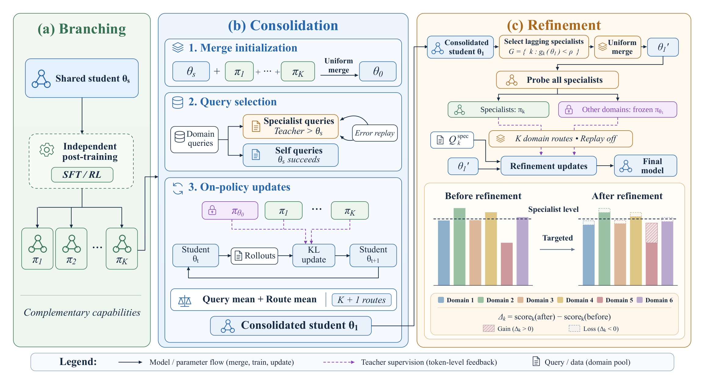
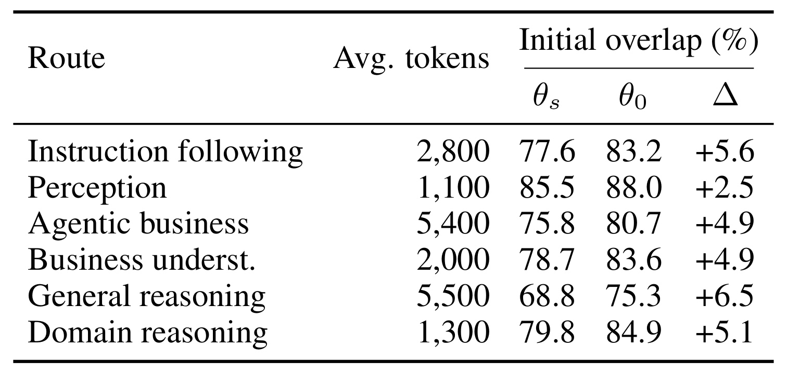
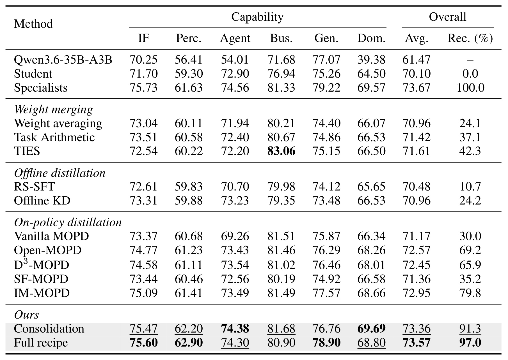
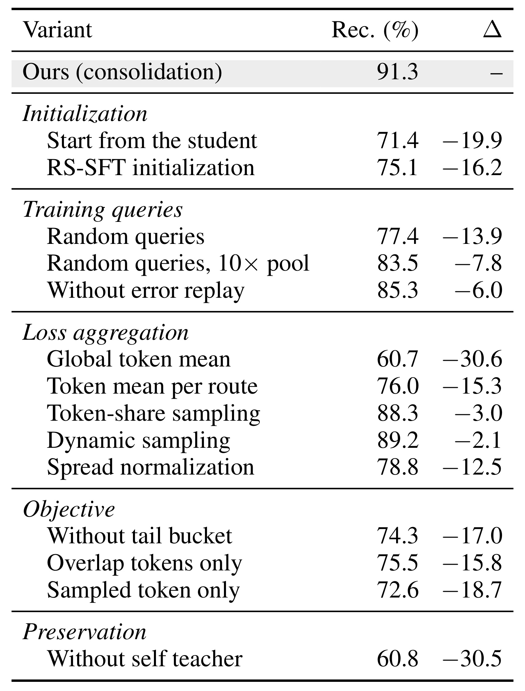
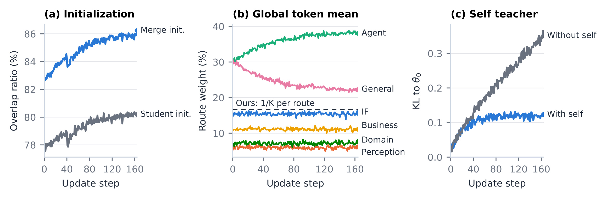
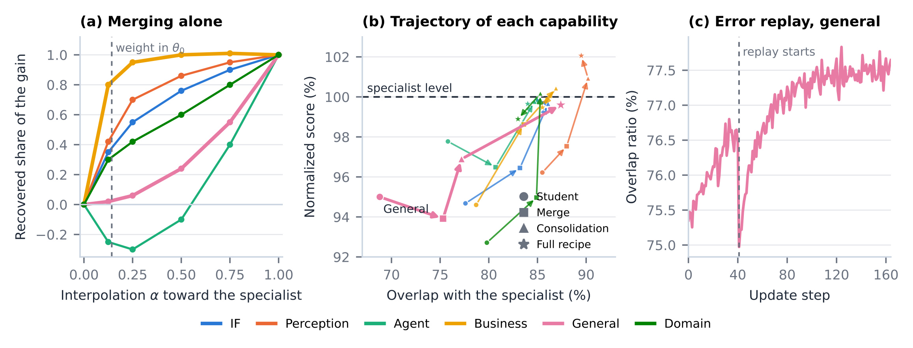
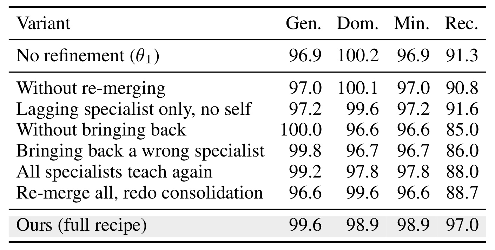
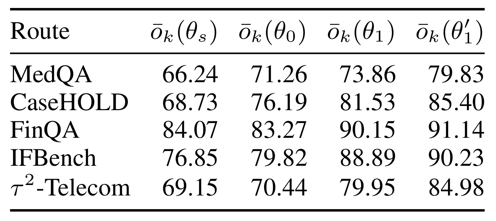
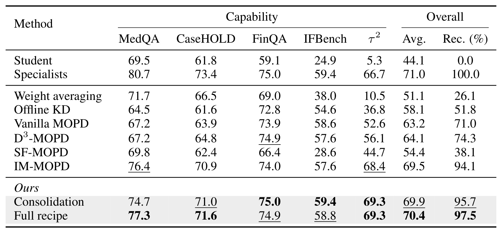

Branch and Consolidate：把分支专家蒸馏回同一个多模态模型
Zihan Liang、Zikun Qu、Ben Chen 等人研究同源专家经历充分后训练以后，怎样把指令遵循、感知、工具使用和不同类型的推理合回一个模型。一作主机构是快手，合作者来自香港中文大学（深圳）、新加坡国立大学、华东师范大学及宾夕法尼亚大学。论文分开处理大范围的能力整合与少量落后领域的精炼。arXiv v1 提交于北京时间 2026 年 11 月 24 日，论文注明计划发布代码，独立实现仓库尚未核验。论文入口
各领域专家从同一个检查点出发，经独立后训练后拥有互补能力。当专家在充分后训练后明显偏离共同起点，单纯合并权重或常规多教师在策略蒸馏都难以充分接回这些能力，已有公开研究则大多考查仍接近原检查点的专家。
1. 背景和问题
把基础模型分成若干训练分支，在组织上允许图像感知团队筛图文和视频数据，工具团队维护多轮操作环境，推理团队单独设计可验证的奖励。分支沿用同一骨干、分词器和初始化。部署一套综合模型时，问题变成学生能否从每个分支带回它在本领域新增的能力。这里的教师分配发生在离线训练，合成后的请求可以由一个与原学生同尺寸的检查点直接处理。训练中发生的能力取舍会保留到服务模型。
论文特别区分两种专家产生路径。公开整合研究通常在共享底座上跑单领域强化学习，形成的分支可能仍能顺着学生的常用生成轨迹给出相似分布。生产中的分支可以经历多阶段数据和目标切换，图像与视频理解、工具调用格式、开放式商业描述和长推理各自积累专有更新。本文工业实验的共同起点是公开的稀疏模型进一步继续预训练后的内部检查点，六个专家再由该检查点做大规模监督微调和强化学习。公开底座分数体现的是这条链路更早阶段的结果，以它直接衡量整合增益，会把共同检查点已经获得的能力混进整合阶段的贡献。
权重空间合并是成本最低的尝试。均匀平均直接合各分支参数，任务向量法把各分支相对于共同起点的位移叠加，TIES 再缩小参与的参数范围并处理符号冲突。共同初始化使参数形状和词元索引天然对应，也让平均在某些分支确实有效。可各领域收益相对于权重位移的曲线不齐。商业理解可能在沿分支方向走一小段后已经改善，而涉及长工具链的任务需要位移大到足以让中间动作连贯，通用推理也可能在靠近原点时增益很少。给相同的参数系数不能保证给出相同的能力份额，多分支叠加还要承受方向之间的相互影响。本文因此把合并视为改造蒸馏起点的操作，最终能交付哪些能力仍由后续任务评估决定。
离线蒸馏把专家确实写出的答案或其条件分布拿来监督。一种做法先生成多条答案并保留通过判分的一条，另一种沿专家答案逐位置拟合概率。这类轨迹能展示规范解法，也容易在学生真实应用时遇到前缀差异。学生自己在工具参数里漏掉一个字段，或在推理中间选择了另一个分支，后续状态可能从未出现在专家示范里。多教师在策略蒸馏让学生自己走到这些位置，再由该领域教师读同一个前缀，给下一词元的概率。这让训练直接覆盖学生会到达的状态，同时引入一个实际难题：当教师把概率赋给一组不同的候选，学生经常出现的动作可能在教师那里几乎没有概率。长轨迹里连续出现这样的决策以后，逐位置分歧既可能来自局部可纠的错误，也可能是两者偏离太深、暂时难学的监督。论文用教师和学生的候选重叠诊断这一点，同时保留实际任务正确性作为验收依据。
作者从训练链路里再拆出三个容易混淆的量。首先是题的数量和题所带来的能力信号。师生都会的随机题容易拉低损失，却较少增加能力。其次是去哪里使用优化预算。把所有有效位置扁平化做一遍平均时，一道长工具题和一道短感知题进入更新的比例取决于生成长度，错题重采样又会扩大某些路由的问题数。数据由预先分支的专家拥有，梯度中却可能主要在做少数长轨迹的工作。第三是已经具备的能力。原学生可以答对一批有价值的题，专家样本中的难题对这些题缺少直接约束。所有新梯度在同一组参数里叠加时，优秀的起始行为需要可追踪的来源和足够的监督份额。用原始学生选择能答的题，冻结合并模型来给出概率，把这两个职责分开，具体定义才能落到数据与权重。
错误回放也是这个问题的一部分。学生随着训练改变后，静态标记的难题会失去难度，也会在实际采样中暴露新的后半程错误。回放要重新生成，而固定回放旧输出会把学生重新送进过去的状态。回放池越大，稍长的轨迹也越多。如果记录的是全局平均，进入错题池时会看到重叠骤降，究竟是能力退化还是开始接触更难的样本，需要同固定探针和各任务验证分一起看。
这项研究与推荐或多模态智能客服的交点在于训练分工和推理合同。一个有视觉判断、业务知识和可调用工具的内容助手，可能由不同数据与奖励维护。如果各分支共享骨干与词表，就具备在同一输出空间做条件蒸馏的前提。根据本文的路由约定，训练问题要有明确归属，评测也要能展示每个专家的原始增益。跨能力请求同时要求理解一帧画面和调用交易工具时，单域结果无法替代组合评估。把整套方法用于判分信号弱或允许多个合理行为的业务，需要先决定可验证的状态、每条路的长短变化，以及保留旧模型哪些行为的代价。从论文的工业设置看，短感知路和长工具路之间的长度差已经接近五倍，预算和聚合单位的选择足以显著改变监督的实际组成。
另一个阅读边界是分数的归一化。作者想比较的是在共同起点之上，已有专家训练所提供的增量有多少进入同一学生。业务专家如果从较高分开始，只提升很小的绝对分数，按逐域增益计算分母可能贴近零，微小的判分波动都会放大成很高或很低的恢复率。因此全文使用验证域内份额识别明显落后，再用评测域的宏平均增益汇总主结果，辅以各域分数除以对应专家分数。把百分比直接读成总体准确率，或把相对于专家的接近程度当作从共同起点恢复的比例，会把三件事混成一件事。
2. 方法
2.1 任务定义与在策略反馈
设原学生检查点为 $\theta_s$，专家 $\pi_k$ 参数为 $\phi_k$，每个领域维护分布 $\mathcal D_k$。输入问题可以包含文字、图片或视频。训练按问题找到教师 $k(x)$，每步从更新前的学生快照取样答复。令 $h_{x,t}$ 收集问题与该位置前的生成记录，学生端和教师端在同一前缀评估词元分布。多轮工具任务的外部观察进入前缀，观察本身的位置从目标里掩掉，更新集中在模型生成的动作和文本上。每次更新从学生当前可到达的状态取监督。

Figure 1 左侧的共同检查点经独立后训练形成专家，并向中间提供同形的权重。中间的上方先用原学生与所有专家做均匀平均，输出整合起点。中间的数据图说明领域问题会被原学生的表现拆为两个用途。专家题来自教师更强的位置，自查询来自原学生已经会的题。回放弧线绕回专家题一支，表明错题需要再次进入学生当前的轨迹。从中间下方看，三条紫色虚线传的是教师监督，从左到右的实线才是学生快照、作答、反向散度和更新后学生。图中带锁的紫框是冻结的合并起点，和用于选自查询的原学生是两个检查点。底部的问内平均和路由平均固定监督份额，教师支路共为专家数加一。中间输出在验证集上选中后到右边，低恢复专家先参与重新合并，接着对所有专家做兼容性探针。此时冻结参考换成合并前的整合学生，确保重合并前已获得的能力仍有监督，其他显著变化或仍落后的领域用各自专家。右侧柱图在同一专家水平虚线旁标出可能的增减，说明定向精炼也会轻微扰动其他领域，柱高是方法示意，实测变化由主表和精炼对照提供。图中左侧题池外的回放提示也有对应的停止条件，精炼沿用选择题池并关闭回放，避免少量更新时引入额外的样本份额变化。按图复查一轮更新，应对得上生成快照、问题标签、提供概率的教师、参与损失的生成位置和最终用于定路由的验证检查点，这五项来自不同环节。图中最右面的分支终止于单一学生。
式（1）的完整目标与式（2）的兼容性观测可以共用一份前缀日志。前者直接优化该位置的分布，后者把排序最前的候选变成集合，便于逐阶段追踪。作者每批新轨迹只更新一次，并直接对散度反传，未将对数比改写为策略梯度中的优势。
符号解释：$x$ 指问题，$t$ 指其生成位置，$p_{x,t}$ 和 $q_{x,t}$ 分别由正在优化的学生和被分配的教师计算，$\theta$ 是学生参数。$D_{\mathrm{KL}}$ 是以学生为权的反向 KL。$\operatorname{Top}_b$ 按概率取前 $b$ 个词元，$b=32$，$o_{x,t}$ 是共享候选占比。两个模型把同一批候选排在前面时可以有完全不同的概率，重叠因此负责兼容性诊断，损失仍读取概率差。固定问题探针允许不同检查点从同一问题各自生成，其前缀轨迹仍可能不同，测值包含当前策略产生的状态分布。
2.2 整合的初始化、选题与目标
整合先把 $K$ 位专家和原学生求等权重均值。这个起点只在共同结构下有直接定义。它靠近某些教师常用的下一词元分布，且在训练全程固定留一份副本，使后面每个新批次能同时检验学习新能力的梯度和留住起始行为的梯度。
符号解释：$\theta_0$ 是整合的学生初值，$\theta_s$ 是共同分支点，$\phi_k$ 是第 $k$ 个专家参数，$K$ 是专家总数，$\pi_0$ 是自教师。均匀合并希望给所有教师建立足够的起始分布交集，评测分数仍可取决于训练路径怎样进一步分配更新。工业中自教师持有一条额外路由，它的概率参与损失，它的参数停止更新。
每个领域从原专家已有监督微调或强化学习题池建立两套问题。可验证答案时，让原学生和对应专家各做一次，只把专家正确而原学生错误的题放进 $Q_k^{\mathrm{spec}}$。开放式描述或图像说明用评分细则，取专家比学生高最多的题。$Q_k^{\mathrm{self}}$ 从该域未过滤池随机抽候选，保留原学生答得好的题。整合将这些自查询取并集交给冻结 $\pi_0$。专家路由从第一步就收集当前学生做错的问题，在走完四分之一训练后，每批保留固定数量的新题，再按池大小补最多同样数量的回放题。回放题以当前快照重新生成，答对即出池。原学生负责选题，冻结自教师给概率，当前学生生成与触发回放。初次被判为专家有优势的问题，训练中可能在第一次遇到时就解决，这个机制允许错题集合跟着进度改变。
实际目标保留教师的三十二个高概率词元和一个尾桶。保留尾桶使双方分布在这个粗化空间仍各自归一，学生放在教师偏好集合之外的总质量有明确约束。目标再依次在生成位置、问题和路由取均值。
符号解释：$S$ 是教师高概率集合，$v$ 是指定词元，$p(v)$、$q(v)$ 为学生与教师的概率，$\bar p$、$\bar q$ 分别是它们落在集合之外的概率和。$\widehat\ell_{x,t}$ 是式（4）的粗化散度。$T_x$ 是问题 $x$ 的有效生成位置，$B_k$ 是一个批次里给第 $k$ 条路由的问题，$\mathcal R$ 是本阶段纳入平均的路由集合，$\mathcal L$ 是式（5）的批损失。尾桶把尾部分布内部差异压成一个值，同样的尾部总量可能仍有完全不同的长尾排序。实现用全词表求学生概率，教师概率加 $10^{-8}$ 下限后在三十三个桶中重新归一，单位置损失截断在十。论文的节省表述针对逐桶散度，不意味着学生漏算词表归一化。
最内层使短题与长题在同一路由里获得同等的标量系数，第二层使某条路多抽样或多回放时仍在固定监督份额内学习。所有路由问题数相同时，按路由的外层平均等价于按全批问题平均。任一批缺某路由时分母会消失，这套定义依赖构造完整路由批，具体缺席处理原文没有给出。这里的等权是目标函数权重，不承诺各教师梯度范数相同。按问题均衡也意味着一条长答案的单个词元权重更小，工具观察掩码和长度上限都必须先落实，再算每道题的归一化分母。
2.3 针对落后能力的精炼
整合后在固定验证集选出 $\theta_1$，按原学生到专项的可用提高量计算每域进展。低于阈值的专家进入集合 $G$，和整合检查点等权重合并。这个局部操作不把所有教师再放一遍，可以减少恰好靠近各专项的能力被搅动。重新合并之后还需要检查副作用，因为原来贴近的教师可能被推远。
符号解释：$a_k$ 是领域 $k$ 在留出的验证集上的得分。$g_k$ 是式（6）定义的领域恢复份额，$\rho=0.5$。$\theta'_1$ 是式（7）的重合并参数，$\bar o_k$ 是固定领域探针上对生成位置做平均的兼容性，$\tau=0.8$。$T$ 是精炼使用真实专家的路由集合，含所有落后专家以及重合并以后仍低于重叠阈值的其他专家。这个阈值看的就是精炼起点处的绝对重叠水平。原来分数好的路由也会回到真实教师，只要现在的兼容性落到阈值之下。原专家增益过小时 $g_k$ 对分数噪声敏感，论文沿用它作为粗筛信号，报告时改用宏平均度量。
精炼从 $\theta'_1$ 继续短时在策略训练，$T$ 内路由继续读对应的 $Q_k^{\mathrm{spec}}$，其余路由改用各自的 $Q_k^{\mathrm{self}}$ 和冻结 $\pi_{\theta_1}$。高兼容性领域由此保留整合末端的行为。现在总共只有 $K$ 个领域路由，保留使用同一损失聚合，所有路由关闭错误回放。若 $G$ 为空，重合并公式直接退化为 $\theta'_1=\theta_1$，集合 $T$ 的探针条件仍可定义。训练完成后交付选中的单学生，三个检查点与专家路由用于构造训练；给新请求生成时，由最终学生自身的分布决定动作和文本。
3. 实验结果
3.1 实验口径与初始重叠
工业设定中，原学生来自 Qwen3.6-35B-A3B 的内部继续预训练。六个专家分别负责指令遵循、感知、业务工具、商业理解、通用推理、领域推理。指令遵循使用 IFEval、MM-IFEval、MIA-Bench 及内部测试。通用推理用 IMO-AnswerBench、MathVision、LogicVista 及 MMMU-Pro 的十选项和视觉两个设置。其余四域使用未披露的内部基准。每域内部先对本域基准得分取平均。验证集在开训前冻结，每域一百题，与正式评测集互斥，检查点按验证分选取。工业重叠探针固定一批共二百五十六个覆盖各路由的问题。

Table 1 首列是六条路由，第二列的长度来自原始学生答复。后三列依次是原学生与对应教师的初始重叠、均匀合并后与同教师的重叠、二者差值。长短差接近五倍，感知平均约一千一百词元，通用推理约五千五百，业务工具约五千四百。设这三路各抽一道平均长度的题，扁平词元平均会令感知约占三路词元的十一分之一，而另两路各接近二分之一。这个示例只说明长度进入分母的方向，实际批次的份额取决于抽题和回放。通用推理从百分之六十八点八到七十五点三，改善六点五，六路最大，合并后水平仍最低。感知从八十五点五到八十八点零，只涨两点五，但起点和末端都更高。领域推理从七十九点八到八十四点九，已经越过精炼后来用的八成门槛，不过这时还没经过整合或重合并，不能直接据此指定精炼教师。表中可观察到合并对六路都提高初始重叠，以及位移的效果并不均匀。词元候选之间的接近程度帮助判断从哪里开始训，感知最终超越教师则要回到主结果确认。这里各题长度来自原学生，动态训练所见的每路真实词元数应从 rollout 日志重新统计。
工业训练使用三十二张 H100，参数全量更新，常数学习率 $10^{-6}$ 且无预热，每题每次生成一条作答，每次模型调用最多十六千生成词元。Qwen3.8-27B 判定筛题、回放和 RS-SFT 响应。整合计划一百六十四步，每批二百五十六个新问题，约六分之一给自教师，在首个四分之一之后可加回放题。精炼十步，批大小和学习率沿用前一阶段，约半数问题来自自查询。所有受训工业基线使用相同未筛选候选来源、总更新数、批大小和学习率，比较对象包含权重合并、离线蒸馏及加入各自机制的在策略变体。相同预算的共同量主要是更新数与新问题批大小，实际生成词元、教师判分和筛题代价随训练流程变化。
3.2 工业主结果
式（8）计算恢复率时先对能力分数做宏平均，再形成两个宏平均得分差值的比。相对于单域专家的归一化分数也一起看，它回答当前实际表现离该领域专家还有多远。
符号解释：$S_k$ 表示正式评测中该域的分数，$\overline S(\theta)$ 是单一学生跨域平均，$\overline S_{\mathrm{spec}}$ 取各领域对应专家的得分来平均，$K$ 是能力数，$\operatorname{Rec}$ 是增益回收份额。任一能力的归一化分数另用 $S_k(\theta)/S_k(\phi_k)$ 计算。恢复率为百分之一百表示综合模型的总体平均等于由各领域专家构成的参照，个别域依然可有分差。表中平均值显示位数有限，按展示数字手算会和基于未舍入得分的恢复率略有差异。

Table 2 中原学生平均七十点一，六个专家按各自领域拼接后的均分七十三点六七，二者的差值是恢复率分母。整合达到七十三点三六，恢复率百分之九十一点三，精炼后平均七十三点五七、恢复百分之九十七，最强在策略基线 IM-MOPD 为七十二点九五和百分之七十九点八。公开 Qwen 底座平均六十一点四七，只作为更早训练阶段的参考。指令、感知、业务工具、商业、通用、领域六列要结合不同专家各自的增量读。感知完整模型六十二点九，高于专项的六十一点六三。商业理解从整合的八十一点六八回到八十点九，领域推理由六十九点六九降到六十八点八。工具也小幅回落。通用推理由七十六点七六到七十八点九，是精炼后均值抬升的主要来源。商业理解里 TIES 达八十三点零六，高过单域专项和完整方法，而助手工具列同一 TIES 只有七十二点二，低于原学生七十二点九。同一策略的取舍能够发生在不同列。朴素在策略拿到百分之三十恢复率，工具列六十九点二六跌得更深，提示接触真实生成前缀仍不足以处理目标聚合。离线版用同一分布目标却在专家写出的前缀拟合，恢复率百分之二十四点二，正确响应筛选微调为百分之十点七。该表支持在固定共同起点回收更多平均能力，但在挑选精炼后模型时，有底线约束的领域要直接看原始列，修复一个难领域的平均收益不能抵消业务要求中的单列损失。作者按未四舍五入分值计算，以两位小数反推精确的百分点会有偏差。
附录把通用推理拆回各基准，主要欠账出现在 IMO-AnswerBench，整合分数 73.25 对专家 85.00，精炼拉到 82.60。相同领域的 MathVision 在精炼后从 84.47 到 84.90，仍低于原学生 85.03，却高过专家 83.32。这种域内基准异质性也影响阈值的解释。$g_k$ 决定的是整个通用推理路由，无法自动把监督只投给数学竞赛题。
3.3 整合消融与过程诊断
主表把整套配方与既有策略比较。消融把对照设为整合阶段，逐组替换一个设计，避免精炼对中间缺失的能力进行事后修补。

Table 3 的右侧第一列是恢复率，末列是与完整整合的百分点差。初始化回到原学生时为七十一点四，低十九点九，先用筛选监督微调初始化也只有七十五点一，说明本设置下加一轮答案拟合不能重现合并对学生起点的影响。随机题池使恢复率从九十一点三落到七十七点四，扩大十倍后为八十三点五，仍差七点八。删掉错题回放降六点，说明第二次利用学生反馈有增益。聚合一组，全局词元平均与路由内按词元聚合为六十点七、七十六点零。前者使长路由多占梯度预算，后者消除总路由份额差以后，路由内仍偏向长轨迹。按词元份额抽题和动态抽样分别八十八点三和八十九点二，靠近但仍低于配方使用的问内和路由内平均。尾桶、只看教师学生重叠词元、只拟合采样词元三个目标变化损失十七、十五点八、十八点七。去掉自教师降至六十点八，与取消聚合的降幅接近，能力保护与监督分配各自有明显影响，不能把这些单行跌幅相加去预测同时删掉几项。每行在完整整合的其余件仍运作时测量，也没有隔离跨组件交互。若调试时只有一种下游恢复率可读，表中高影响改动会同时改变多个领域，需要与教师和学生分布记录一起找原因。表把各对照按同一次数据体系组织，比直接比较代价各异的基线更容易定位是哪类选择造成差距。表中的聚合改动也可能同时改变梯度方差和各领域的可学性，需另测各路梯度范数。
两级聚合和保留锚点的解释可以借助输出分布曲线复核。特别是业务工具在全局词元平均下就拿到很大份额，却没有随份额一同获益。

Figure 2 三幅横轴都是更新步。左图纵轴是重叠率，合并曲线从第一步就高于原学生初值，两条曲线学习期间都上扬，结束仍有分离。这里同一题的学生生成前缀会随起点不同，因此观察结果既能反映候选更近，也能包含轨迹改变。中间图纵轴是各路由在全局词元平均的损失份额。业务工具从三成上下升向约四成，通用推理从近三成下降，感知和领域推理多在较低档。中间图的水平参考线表示每位专项等份额，图面用专项路由数来标，整合的完整式另有一条等权自教师路由，因此实现时以式（5）的实际路由集合为分母。只检查抽了多少题，会漏掉轨迹长度变化产生的份额漂移。右图纵轴是到合并起点的 KL，有自教师时从零抬升后在约零点一二附近趋稳，去掉它的版本继续超过零点三。这支约束允许新能力改变学生分布，同时限制变化的幅度。右侧曲线只量化朝向参考状态的漂移，判分仍要对照遗忘发生在哪些任务。比如附录表的取消自教师版通用推理为七十三点零九，低于原学生七十五点二六，感知仍高于原学生，两个领域不会因同一个全局漂移值而表现出相同程度的回退。上线前如果用一条总 KL 做监视，至少要另外记录每路的原始分母和跟踪测试曲线，才知道哪一类旧能力发生了变化。三幅图分别诊断起点、预算和漂移。重叠更高的起点还需通过实际任务得分验证，才能判断它是否改善最后的交付能力，并找出受益的路由。
作者另做单教师参数插值，并在阶段检查点和回放开启时测量变化。

Figure 3 左图横轴是从原学生向单一专家移动的插值系数，纵轴是恢复这位专家自身增量的份额。虚线标均匀全专家权重合并时每位教师约七分之一的系数，不能把这条单分支插值直接当成全量合并的得分。商业理解较快接近专项收益，工具路早段反而可能向下，通用推理在小插值时接近原状态。中间图横轴是和对应专项的候选重叠，纵轴是当前得分除以该专项分数，不同形状是原学生、合并、整合、完整配方。通用推理从重叠与得分均较低的点出发，整合后仍低于专项水平，最后阶段才接近一百的横线。感知靠近或超出基准时，任一域的重叠继续增长都不等价于其分数也单调增加。右图把通用推理单列出来，横轴是训练步，回放刚开启后重叠从当时水平短暂降到约七十五，然后恢复到较高位置。作者认为新的批次加入了更难题，这一时点的可见下降和整体的能力下降有不同成因。附录的错题池轨迹显示通用推理从约一百六十缩至一百零五，与此同时仍有新问题流入，也仍是六路中最大的错题池，因此有净解决且残余明显。把这几幅图一起用于诊断时，单教师低位插值解释先合并的局部限制，中部的阶段结果支持定位具体欠账，右图能避免把一次抽样策略切换误认为权重异常。它们没有用固定外部评估验证过每一个中间更新点。若要做自动告警，回放启用应作为一次数据条件变更，使用不变探针和按领域评估复核持续跌幅，再作停训判断。
附录的两组额外对照让诊断更具体。随机题比差异题得到更低教师损失和更高重叠，但收回能力更少。只看采样词元时学生分布熵从约 0.5 上升到 0.65。将目标改成正向 KL 的消融掉 46.7 个恢复百分点，而 Top-8、Top-128 相比 Top-32 分别少 3.7 和 2.0。自教师题数翻倍影响其采样覆盖，损失权重翻倍则会更显著地压低恢复率，两者在路由等权约束下不是等价操作。相同预算配置下把批量翻到五百一十二会减少更新与新轨迹轮数，掉 10.7 点。双轮整合允许重新生成更多样本，恢复率达 94.0%，更新数也翻倍。三档候选数的比较只覆盖这组教师与模型规模。
3.4 定向精炼与成本
工业验证只把通用推理列为低恢复能力。附录的重叠记录中，它与专项的重叠由约 77.2% 上升至 86.0%，而领域推理从 85.3% 掉到 78.1%，成为其他路中唯一低于阈值的专家。领域教师因此回到训练，其余四域由冻结的整合学生监督。

Table 4 每个精炼变体都是十步。前三个结果列依次对应通用推理、领域推理和最差领域相对各自专项的得分率，末列回到式（8）的综合恢复率。因此整合后的通用推理显示九十六点九，与触发精炼的验证恢复份额低于一半可以同时成立，两列使用不同数据和分母。跳过重合并直接精炼，通用推理仅从九十六点九到九十七点零，其恢复率九十点八还低于起点。只用落后专项且没有自教师，通用略好，总体为九十一点六。关键对照是重合并且精炼但不召回领域专项，通用能到一百，领域下探九十六点六，总体只剩八十五。把不应召回的其他教师替进来，总体仍只有八十六，说明任何一个额外教师都不能达成同样保护。恢复全部专家的监督能把领域托到九十七点八，但总体八十八，移除了冻结整合教师对已收回能力的锚定。完整版通用九十九点六，领域和最差能力都是九十八点九，总体九十七。这里决策关心的是新取得的能力、旧能力的下限和总恢复率三件事。只按通用列排名会偏好不召回，而把最低域一并记录时这项选择出现明显成本。回归控制还可以直接对照 Table 2 的绝对分，证明有些旧能力仍会下降，精炼阶段的设计是在有限预算内维持最弱项并回收平均收益。两类阈值各自约束的是能力缺口和重新合并对教师兼容性的冲击，工业里被真正拉回的路由也只有一条，尚无法覆盖多个风险教师同时被拉回时的梯度竞争。
附录成本以选中的检查点为止，整合 550 GPU 小时，精炼 35 GPU 小时，精炼约占两阶段总 GPU 小时的 6.0%。这是同一组 H100 上报告的训练成本口径，没有细拆构造题池、外部判分和训练期间的各模型资源。方法最终只推理一个同尺度学生，论文没有测服务时延、生成长度变化、每请求开销或线上业务效果。
3.5 公开五域验证
开放复现沿用 IM-MOPD 的五域配置。学生是 Qwen3-4B-Base 经 OpenThoughts3 微调。医学 MedQA、法律 CaseHOLD、工具使用 $\tau^2$-Telecom 三个专家由监督微调获得，财经 FinQA 和指令遵循 IFBench 由可验证奖励训练。模型、数据和评测公开。每种方法总计一百步、批大小一百二十八个问题、每题一条生成、学习率 $10^{-6}$、上限 16,384 词元。配方把最后一成更新留给精炼。工具用 pass@1，其余评测用 avg@3，后者是三次作答的平均表现。工具下一轮是对话上下文，缺少可判的单一答案，直接随机抽问题与自查询，并关闭这一支的错题回放。精炼先找出医学和法律为验证中欠账的两个领域，再对五个路由测重合并后的兼容性。

Table 5 四列依次读原始学生、所有专家均匀平均后的起点、整合结束、只重新合并医学和法律后的起点，每行都是学生与该行教师的前序三十二候选重叠，保持每个路由一百个固定探针问题。工具使用只取第一轮，第一轮重叠不能概括后续工具响应。原学生医学六十六点二四、法律六十八点七三、工具六十九点一五，均低于七成。财经从八十四点零七到八十三点二七，初次合并反而小幅下降，与工业主表六条一律回升构成口径相同的例外。最后一步医学七十三点八六到七十九点八三、法律八十一点五三到八十五点四，两个领域均因验证分而使用真实专家，法律最终兼容性超过八成也不会从落后集合中被剔除。其他三位专家在重合并后兼容性都高于百分之八十，财经九十一点一四、指令九十点二三、工具八十四点九八，均改由冻结整合学生在本域自查询上监督。这和工业领域推理需召回教师形成对照。表中兼容率反映读取哪些候选，针对未来是否需要召回某个专家的判断应补观察实际答题得分及工具环境的后续状态。
公开组按五项绝对分和宏平均恢复率报告同预算对照。

Table 6 的五条能力列横跨选择题、金融推理、指令和工具任务，右边的恢复率使用同一表里原学生均分四十四点一与专家均分七十一点零的差值。IM-MOPD 均分六十九点五、恢复百分之九十四点一，本文整合阶段均分六十九点九、恢复百分之九十五点七，完整配方达七十点四和百分之九十七点五。对精炼前后逐列看，医学由七十四点七到七十七点三，法律七十一点零到七十一点六，是补回最多的两维。FinQA 从七十五到七十四点九，IFBench 从五十九点四到五十八点八，工具维持六十九点三。与公开专家各自的分数比，工具比专项六十六点七更高，医学和法律仍低于专项八十点七和七十三点四。与 IM-MOPD 比，最终的五项得分全都更高，阶段间仍有小幅回退。朴素在策略已经回收七成一，权重平均只到二十六点一，跨度和工业结果相差明显。套相同总体流程获得领先，适用范围已有第二种数据与模型规模的支持，但提升绝对规模受基线可恢复空间、公开工具能力的大分母和该域验收方式共同影响。公开场景遵守固定总更新数的同时还把不同方法训练信号的生成方式留在各自方案中。进一步复核时应看每域给定探针和实际生成题是否稳定，避免把单次分数上的小幅差异当作跨种子的确定结论。工具维持六十九点三这一行还表明，绕过无法判定下一步准确性的选题与回放后，流程依然可以并入该路由，却无法隔离随机抽样与自教师保留各自的作用。
4. 总结
4.1 我的判断
这篇工作让我更重视蒸馏中三个独立的验证对象。学生与教师在当前前缀上的候选重叠决定了两者在哪里共享可学习的支持，已经恢复的领域分数决定了是否仍需要用专项监督，数据聚合决定了每批实际把多少权重给到这些位置。作者在工业里遇到通用和工具轨迹都很长，但只有通用推理需要精炼，说明长度信息解释的是潜在权重偏置，不能代替逐任务诊断。同样，自教师到冻结参数的 KL 能看出漂移，无法独自定义能力是否还在。把几条观测分开核验，比依靠总体损失选出一个检查点更符合这类分工后训练。
我也会把精炼阶段理解为一次小范围参数更新及上线候选的回归检查。工业实验最低领域归一分为百分之九十八点九，公开实验的平均恢复率更高，但两组的个别列都会回落。商业理解从八十一点六八降到八十点九，领域推理由六十九点六九落到六十八点八，这些真实变化在平均恢复率提升时仍然发生。如果产品侧有专项硬门槛，是否采纳精炼末端要据相同检定口径逐列决定。用整合模型冻结后的能力作保留锚点，是可在验证日志中确认的一条设计，尤其适合对某项专项能力追加更新时观察新旧权重的拉扯。
4.2 复现边界与下一步
- 参数平均依赖同源、同结构、同词表。不同结构或不同尺度的专家无法用同一套参数算术，本文也没有验证向更小学生压缩。若各路已发生词表或模态编码变化，应当先核对教师和学生输出是否真的定义在同一空间。
- 工业六路的四类任务用未披露基准，无法复算分组、判分离散性和长尾难例。当前仅能沿公开五域复现结构与方向。工具路首轮的候选重叠也无法代替完整环境中的终态成功率，后者应单列检查。
- 两个精炼阈值是经验值，原文没有调优，也没有公开跨随机种子的阈值敏感性。当专家相比原学生只进步一点时，少数验证题波动就可能改变落后名单。应当保留原始分差及不确定性，阈值附近的路线尤其需要复测。
- 工业训练只给出选中检查点以前的 GPU 小时，重放会增加实际生成量，模型静态大小也不控制回答长度。推理费用和多轮时延需要新的测量。作者提及内部扩展到数十个教师，尚无该规模的受控成本和效果对照。
- 第一项跟进是用固定开放数据划分复做初始化、完整整合、完整版和最强基线的对比，报告每域原学生、专项和最终检查点的绝对分、多次重复及恢复率。同一日志保存验证集、判分版本及模型摘要，这样可以把均分改善与选点或舍入差分开。
- 第二项跟进是在同一探针上分域记录问题长度、候选交集、教师 KL、自教师 KL 和错题池增减，并标记回放启用的训练步。比较方案时同时按新题数、生成量和更新次数整理资源，才能判断扩大批量、训练更久或多做回放何者真正改变学习效率。
- 第三项跟进是对重新合并计算兼容性前后差，预先列出要保留的验收下限，并至少跑域内、跨域和多轮工具三种测试。做完一轮低重叠教师召回后，将该域绝对分与其他域回归表一并审阅，利用同预算的无重合并和不召回控制组定位变化，再决定哪个检查点适合交付。